HIST 270 · History of China · Chapter 1 · Lecture 3
Heaven's Mandate
The Zhou Conquest, Its Lords, and Its Songs
1045–771 BCE · Conquest and Mandate · Lords and Garrisons · What Changed · Voices of the Songs Background essay ↗
The He zun, early Western Zhou, Baoji Bronze Museum. Photo: Gary Todd, CC0, via Wikimedia Commons.
Cold open · Muye, a jiazi morning, 1045 BCE
A Bronze Pot Recorded the Morning the Zhou Destroyed the Shang
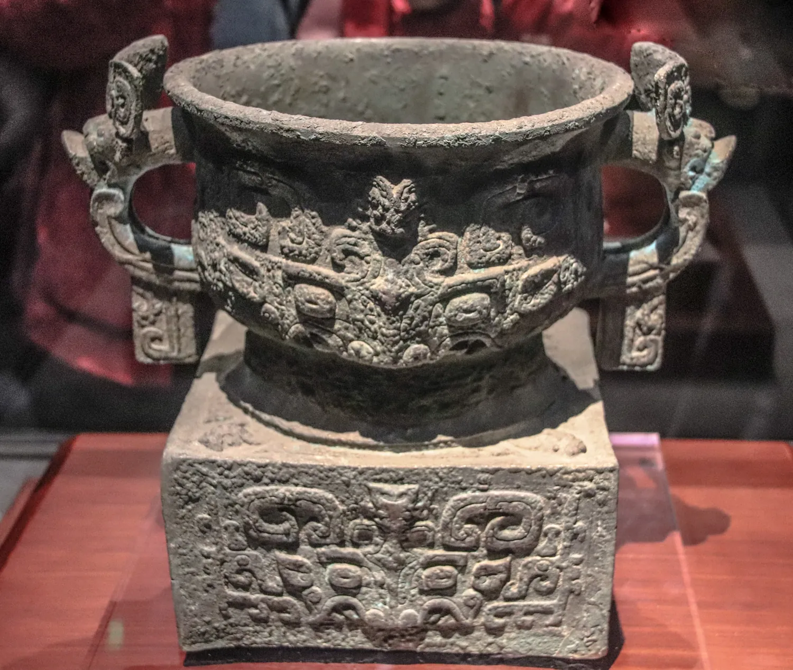
The Li gui, cast just after the conquest and found at Lintong, Shaanxi, in 1976. Its 32 characters date King Wu’s attack on the Shang. Photographed at the Shaanxi History Museum. Photo: Gary Todd, CC0, Wikimedia Commons.
The attack. King Wu of Zhou marched east against the Shang king.
One morning. The Zhou army won on a jiazi day, the cycle’s first day.
A reward. Days later, an official named Li received metal from the king.
The record. Li cast this pot and wrote the victory inside it.
Sources: Ebrey, Ch. 1, p. 15; the Li gui inscription is described in the background essay.
How to use this deck
Zhou Lords Hung Bronze Bells in Their Halls; These Five Tools Help You Read This Deck
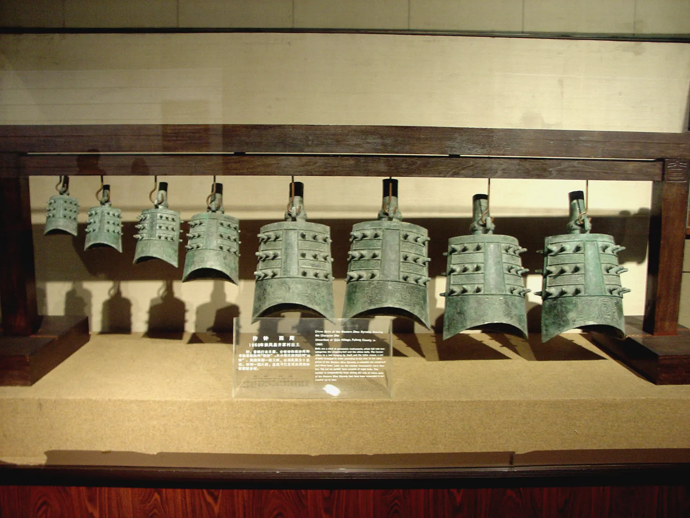
Set of bronze bells (bianzhong), Western Zhou. Shaanxi History Museum, Xi’an. Photo: G41rn8, CC BY-SA 4.0, Wikimedia Commons.
Press S to open the Study Buddy notes for each slide.
Click any image, or press Enter on it, to see it full size.
Click a teal dotted word for a quick definition.
Answer each Reading Guide checkpoint, then open the guide.
Use the arrow keys to move, and Esc for a slide map.
×
Inscription
An inscription is writing carved or cast into a hard surface. Zhou families cast inscriptions inside bronze vessels and bells so that their honors would last for generations.
Popups like this one close with Esc, the × mark, or a click outside the card.
Sources: Ebrey, Ch. 1, pp. 16 and 19.
Roadmap · Four acts, one question
Four Acts Ask One Question: How Did a Conqueror Become a Legitimate Dynasty?
I
Conquest and Mandate
How the Zhou explained their victory. Checkpoint: Q10.
II
Lords and Garrisons
How kinsmen governed the realm. Checkpoint: Q11.
III
What Changed
What the Zhou kept, and what faded. Checkpoint: Q12.
IV
Voices of the Songs
Rank, farming and family life. Checkpoint: Q13.
The thread: Heaven's mandate justified the conquest; family ties held the realm, until they weakened in 771 BCE.
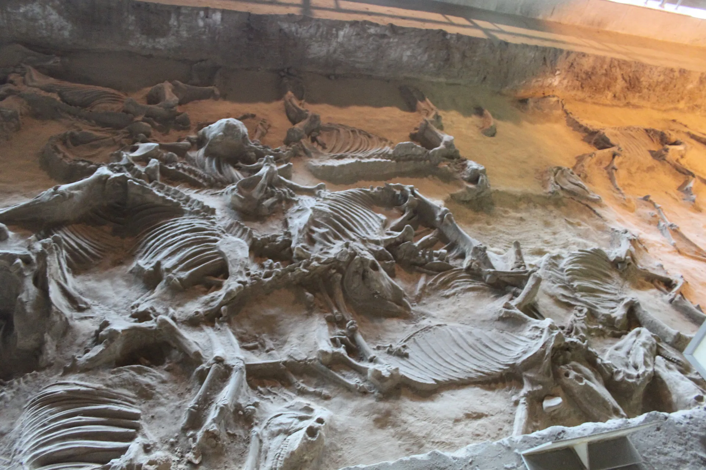
Act I · 1045 BCE · Conquest and Mandate
Conquest and Mandate
A frontier people won a war. Then they had to explain why they deserved to win.
Chariot pit of the Guo state lords, late Western Zhou, Sanmenxia, Henan. Photo: Gary Todd, CC0, via Wikimedia Commons.
Q10 story · The western frontier · before 1045 BCE
A Frontier State West of the Shang Shared Its Culture, Then Overthrew It
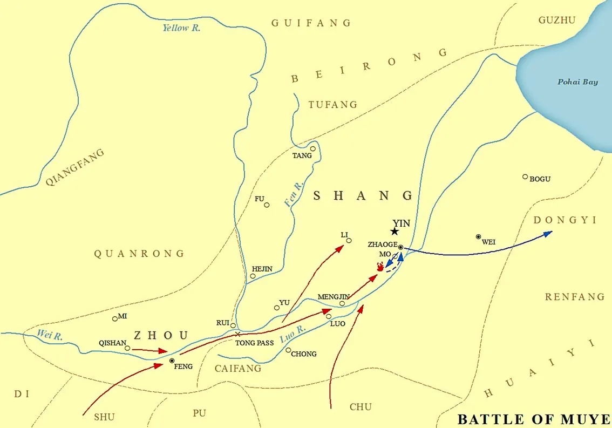
The Zhou march east to Muye, near the Shang capital. Modern map by SY, CC BY-SA 4.0, Wikimedia Commons. Map labels follow modern spellings; Yin is Anyang.
The Qiang. Fierce peoples to the far west probably spoke an early Tibetan.
The Zhou. A frontier state between them shared most Shang material culture.
1045 BCE. The Zhou rose against the Shang and defeated it.
Two Zhous. Western Zhou ruled from near Xi’an; Eastern Zhou later ruled from Luoyang.
Sources: Ebrey, Ch. 1, p. 15 and Map 1.1.
Q10 story · The founders · ca. 1060–1035 BCE
Three Founders Got the Credit: Wen the Cultured, Wu the Martial, and the Duke of Zhou
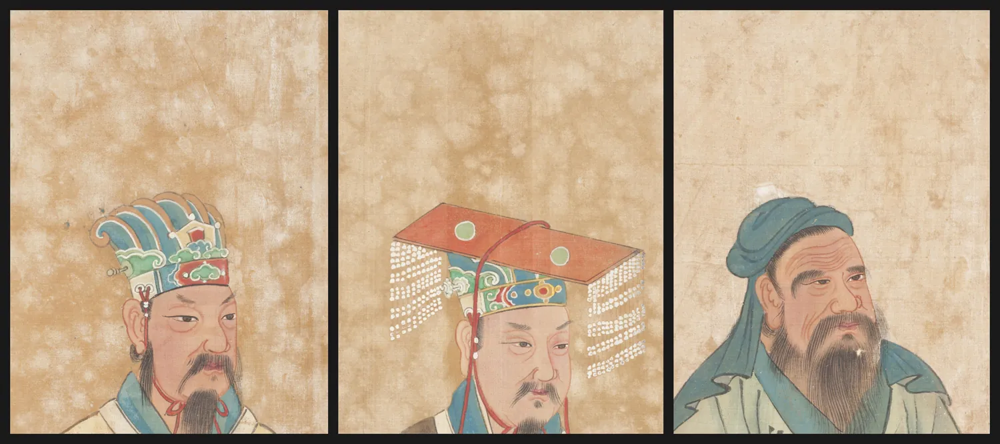
King Wen, King Wu and the Duke of Zhou as imagined by a Chinese painter, 19th–early 20th century, album Portraits of Famous Men. Philadelphia Museum of Art. Public domain, Wikimedia Commons. Not likenesses.
King Wen. “Cultured”: he expanded the Zhou domain.
King Wu. “Martial”: Wen’s son, he conquered the Shang.
Duke of Zhou. Wu’s brother consolidated the conquest.
Regent. He ruled for Wu’s young heir, then handed back power.
Names box: who is who?
×
Names box
King Wen (Wen = cultured): father of King Wu. King Wu (Wu = martial): the conqueror; not the Shang king Wu Ding. Duke of Zhou (Zhou Gong, personal name Dan): Wu’s brother and regent.
Western Zhou (1045–771 BCE), capital near Xi’an; Eastern Zhou (770–256 BCE), capital near Luoyang.
Sources: Ebrey, Ch. 1, pp. 15–16.
Q10 concept · Mandate of Heaven
Concept: The Mandate of Heaven Said Heaven Lets a King Rule Only While He Rules Well
Concept
Mandate of Heaven
The belief that Heaven grants a ruler the right to rule only as long as he rules in the interests of the people. A bad ruler can lose the mandate to a worthier one.
Mandate. An order or authority given from above, here by Heaven.
Heaven. A divine force the Zhou called Tian, meaning Sky or Heaven.
Conditional. The right to rule depends on good rule, not on birth alone.
Shang Kings Fed Their Ancestors; Zhou Kings Also Served Heaven as Its Son
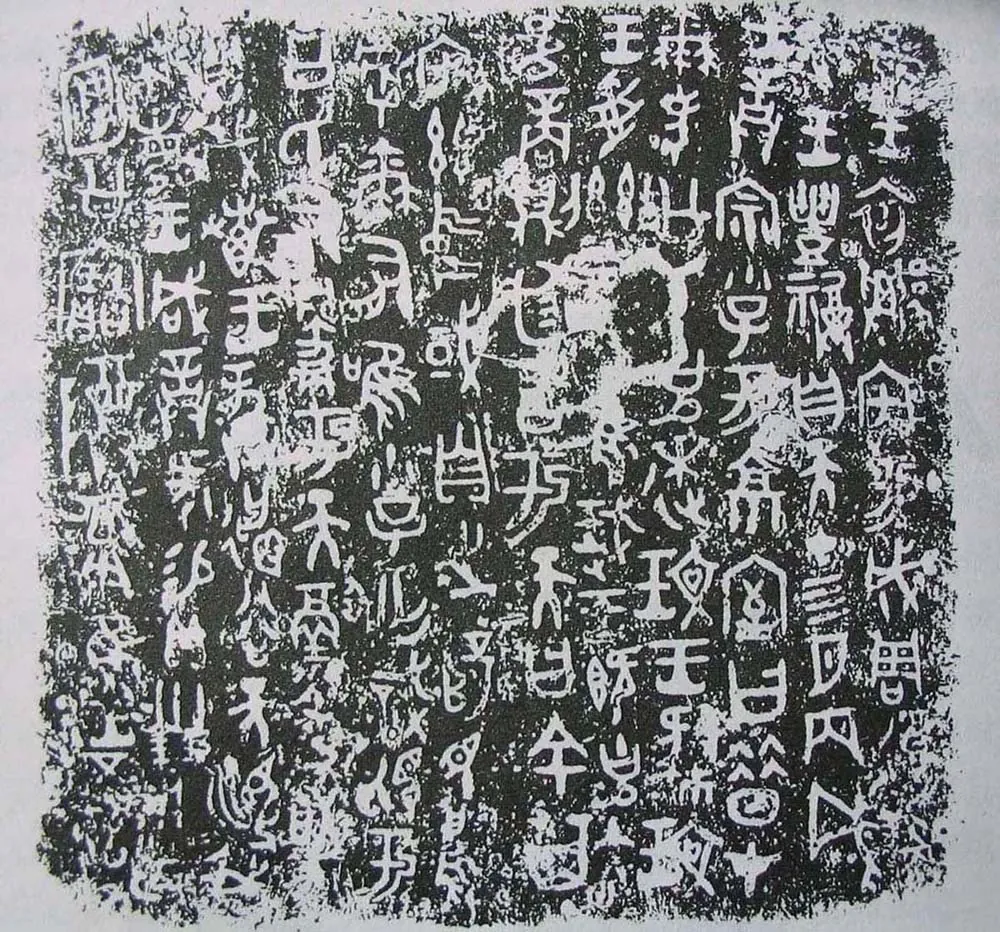
Rubbing of the inscription inside the He zun (the vessel on the title slide), early Western Zhou, found at Baoji in 1963. It quotes a Zhou king recalling that King Wu reported his conquest to Heaven. Public domain, Wikimedia Commons.
Shang kings. They sacrificed to Di and the royal ancestors.
Zhou kings. They sacrificed to their ancestors and also to Heaven.
Son of Heaven. The king claimed a close, personal bond with Heaven.
All under Heaven. The ideal was one ruler over one united world.
Sources: Ebrey, Ch. 1, pp. 10 and 16–17; He zun inscription (see the background essay).
Q10 story · The Zhou version · Book of Documents
The Book of Documents Told the Conquest as Heaven Punishing an Evil King
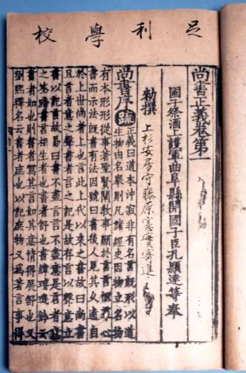
Page of a Song-dynasty printed commentary on the Book of Documents (Shangshu zhengyi), 12th century. Ashikaga Gakko Library, Japan. Public domain, Wikimedia Commons.
Earliest book. The Book of Documents is the earliest transmitted Chinese text.
Speeches. It records Zhou speeches, pronouncements and reports.
The heroes. Just and noble Zhou warriors, supported by Heaven.
The villains. A decadent Shang court led by an evil king.
Sources: Ebrey, Ch. 1, p. 16.
Q10 story · Mandate as argument · ca. 1000 BCE
The Mandate Justified the Zhou Victory, and Every Later Change of Dynasty
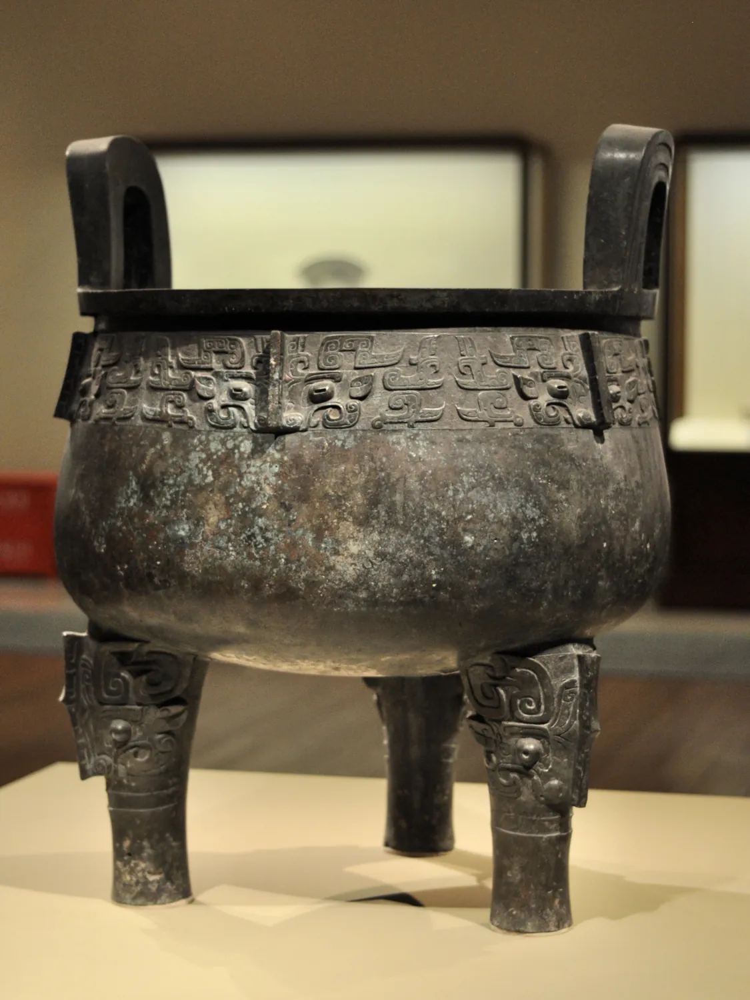
The Da Yu ding, early Western Zhou (about 1000 BCE), found in Shaanxi in the early 1800s. National Museum of China. Its 291-character inscription praises King Wen for receiving Heaven’s mandate. Photo: Charlie fong, CC BY-SA 4.0, Wikimedia Commons.
New idea. The Mandate seems to have had no place in Shang beliefs.
Propaganda? Some scholars think early Zhou rulers built it to win over Shang subjects.
On bronze. A Zhou cauldron says King Wen “received Heaven’s great mandate.”
Long life. It legitimated many later changes of dynasty.
Sources: Ebrey, Ch. 1, p. 17; Da Yu ding inscription, trans. adapted from Edward L. Shaughnessy (see the background essay).
Reading Guide · Review Question 10
Reading Guide · Review Question 10
Review Question 10
Explain the concept of the Mandate of Heaven and how the Zhou used it to justify their overthrow of the Shang Dynasty.
Too much land for one court: the kings sent kinsmen out to hold it.
“The Chou Dynasty, 11th–9th Centuries B.C.,” Albert Herrmann, Historical and Commercial Atlas of China (1935). A 1930s reconstruction with old spellings. Public domain, via Wikimedia Commons.
Q11 concept · Feudal and quasi-feudal
Concept: In a Feudal System a King Grants Land to Lords Who Owe Him Loyalty
Concept
Feudalism · fief · vassal
A system in which a ruler grants land (a fief) to a lord (a vassal) in return for loyalty and service. “Quasi-feudal” means “feudal-like”: similar, but not the same.
Fief. Land granted by a ruler, often with the people who farm it.
Vassal. The lord who receives the fief and owes loyalty and service.
Decentralized. Power is spread out to many lords, not held by one court.
Quasi. Historians borrowed the European word; the Zhou version differed.
Sources: Ebrey, Ch. 1, pp. 8, 17 and 18.
Q11 story · The garrisons · ca. 1040–1000 BCE
Zhou Kings Sent Relatives East to Build Walled Garrisons in Conquered Lands
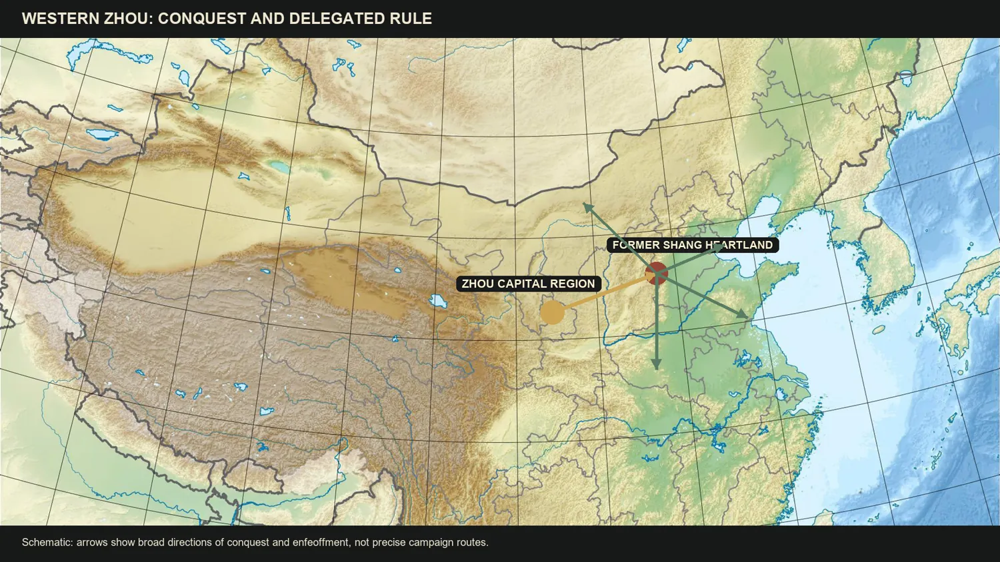
Schematic map: the Zhou capital region and the former Shang heartland; arrows show broad directions of conquest and of lords sent out, not exact routes. Course-made map on Uwe Dedering’s base map, CC BY-SA 3.0.
The problem. The conquered land was too large to rule from the west.
The answer. Kings sent relatives and trusted followers to build walled garrisons.
The center. The king headed the royal lineage and the nobility.
The glue. Ancestor rituals and court visits kept lords loyal.
×
Lineage
A lineage is a group of families who trace their descent from one shared ancestor. The Zhou king was its ritual head: he led the sacrifices to the royal ancestors that every royal relative honored.
Sources: Ebrey, Ch. 1, p. 17.
Q11 story · An appointment ceremony · ca. 800 BCE
Kings Wrote Appointments on Bamboo, and Families Recast Them in Bronze
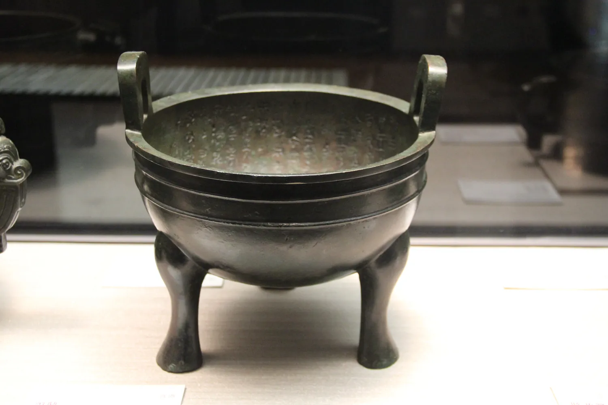
The Song ding, late Western Zhou. Its inscription describes a royal appointment ceremony step by step. National Palace Museum, Taipei. Photo: Gary Todd, CC0, Wikimedia Commons.
The document. Court scribes wrote appointments to offices or fiefs on bamboo strips.
The ceremony. An official read the document aloud on the king’s behalf.
The copy. A copy was handed to the person appointed.
The bronze. His family later had it cast in bronze, to pass down.
Sources: Ebrey, Ch. 1, p. 16; Song ding inscription (see the background essay).
Q11 story · Service and reward · Yu’s inscription
For 100 Heads and 40 Prisoners, Yu Received Fields, Cowries and Two Bronzes
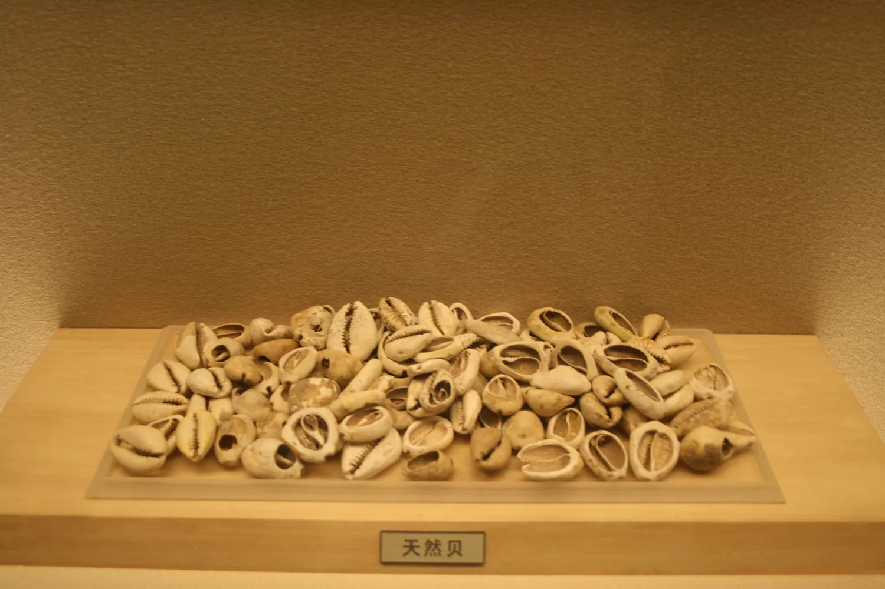
Cowrie shells, used as money in Bronze Age China. Shanghai Museum. Photo: Gary Todd, CC0, Wikimedia Commons.
The order. The king sent Yu to drive back attacks by the Southern Huai.
The proof. Yu returned with 100 enemy heads and 40 bound prisoners.
The reward. Two bronze vessels, fifty strands of cowries and one hundred fields.
The place. The king honored Yu inside the ancestral temple.
×
Ancestral temple
An ancestral temple is a hall where a family honors its ancestors with offerings. Rewarding Yu there made the royal ancestors witnesses to the bargain.
Sources: Ebrey, Ch. 1, p. 18.
Q11 story · A new state · 806 BCE
In 806 BCE a Royal Son Was Made a Duke and Founded the State of Zheng
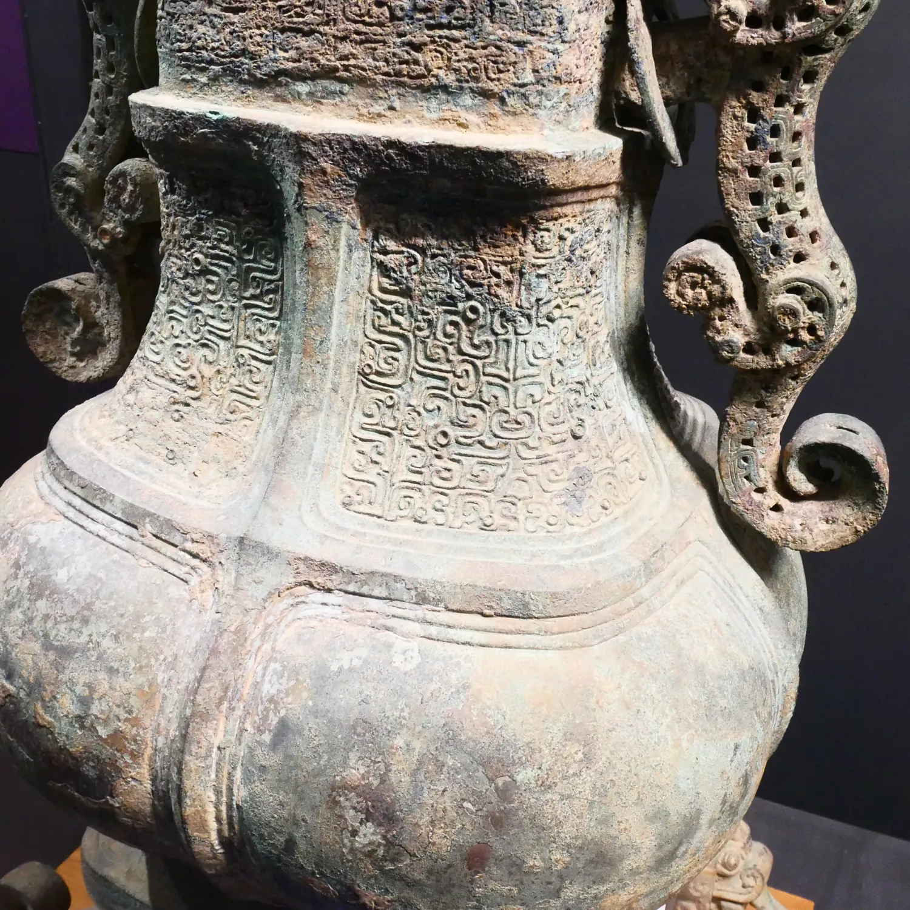
Bronze square hu with coiled dragons (detail), from a Zheng lord’s tomb at Xinzheng, Henan, about 600 BCE: what Zheng became after the Western Zhou. Photo: 氏子, CC0, Wikimedia Commons.
806 BCE. Prince You, a younger son of King Li, was made a duke.
His fief. He founded the state of Zheng, near the royal lands.
Still at court. He and his heirs served the king as high ministers.
Later. Zheng’s lords moved east onto marshy land that had to be drained.
Sources: Ebrey, Ch. 1, p. 17; the founder’s parentage follows Sima Qian, Shiji 42 (see the background essay).
Q11 story · Fiefs become family property · by 800 BCE
By 800 BCE Two Hundred Lords Passed Their Lands and Offices to Their Sons
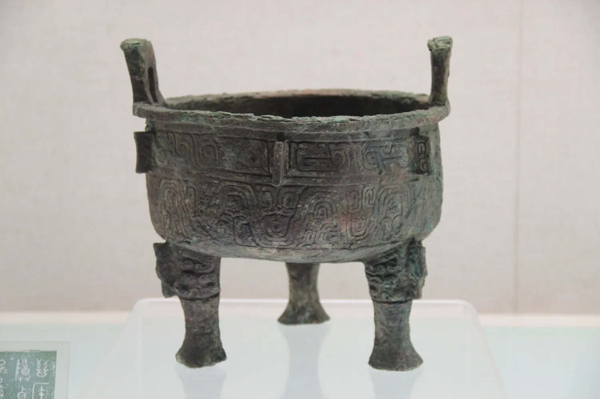
Bronze ding of Marquis Bang Fu of Jin, late Western Zhou, from the Jin lords’ family cemetery (Tomb 64). Shanxi Museum, Taiyuan. Photo: Gary Todd, CC0, Wikimedia Commons.
Inheritance. A vassal could usually pass his position to a son.
Hereditary fiefs. Over time the domains became family property.
By 800 BCE. About two hundred lords; only about twenty-five really mattered.
Offices too. Lords’ officers passed their posts and lands to their sons.
Sources: Ebrey, Ch. 1, pp. 17–18.
Q11 story · Outsiders brought in · ca. 1000–800 BCE
Rong and Yi Chiefs Could Join the Zhou Order, if They Used Chinese Writing
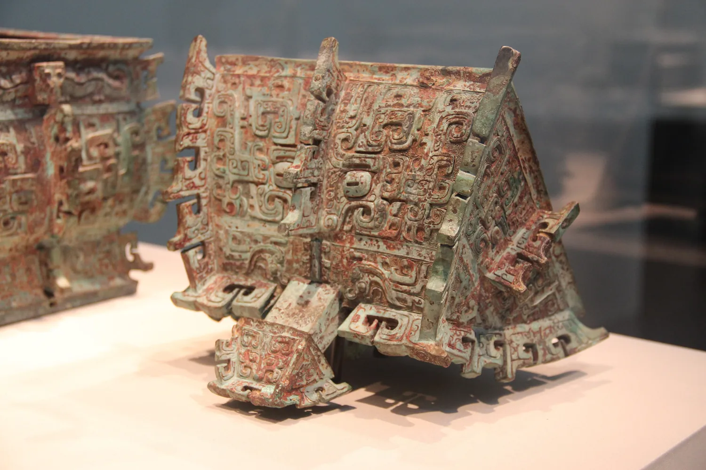
Lid of an early Western Zhou bronze fangyi from Luoyang, cast with a 187-character inscription about orders to officials. Photo: Gary Todd, CC0, Wikimedia Commons.
Outsiders. Yi groups lived in the east; Rong groups in the north and west.
Not primitive. They spoke other languages, but had similar technology.
Recognized. Zhou kings made their chiefs lords of their own lands.
The price. For matters of state, they had to use Chinese writing.
The Zhou kept the Shang toolkit. Some Shang habits quietly faded.
Bronze gui on a square pedestal, Western Zhou, Henan, about 1000 BCE. Freer Gallery of Art, Washington, D.C. (F1938.20). Photo: Gary Todd, CC0, via Wikimedia Commons.
Q12 story · What the Zhou kept · 1045–771 BCE
The Zhou Kept Shang Bronze, Shang Writing and Sacrifices to the Ancestors
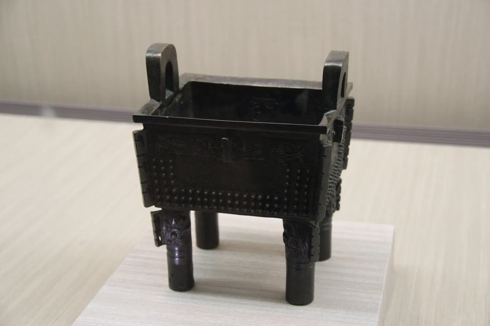
Rectangular bronze ding, late Shang to early Western Zhou, 11th century BCE: a Shang shape that the Zhou kept casting. National Palace Museum, Taipei. Photo: Gary Todd, CC0, Wikimedia Commons.
No abrupt break. Zhou culture grew out of the Shang world it conquered.
Ancestors. Zhou kings, like Shang kings, sacrificed to their ancestors.
Bronze. Ritual vessels kept their shapes and grew more common.
Writing. The Shang script carried on and became central to elite life.
Kings left speeches. Farmers, lovers and parents left songs.
Ma Hezhi, Odes of the State of Bin (detail, the “Seventh Month” ode), mid-12th century. The Metropolitan Museum of Art (1973.121.3). Public domain (CC0), via Wikimedia Commons.
Q13 concept · Transmitted and excavated texts
Concept: Some Ancient Texts Were Copied Down the Centuries; Others Were Dug Up
Concept
Transmitted text · excavated text
A transmitted text survived because people copied it, generation after generation. An excavated text survived in the ground and was found by archaeologists.
Transmitted. The Book of Documents and Book of Songs, copied for three thousand years.
Excavated. Oracle bones and bronze inscriptions, written at the time.
Risk. Copied texts can be edited; buried ones are often short.
The Book of Documents Spoke for Kings; the Book of Songs Spoke for Many
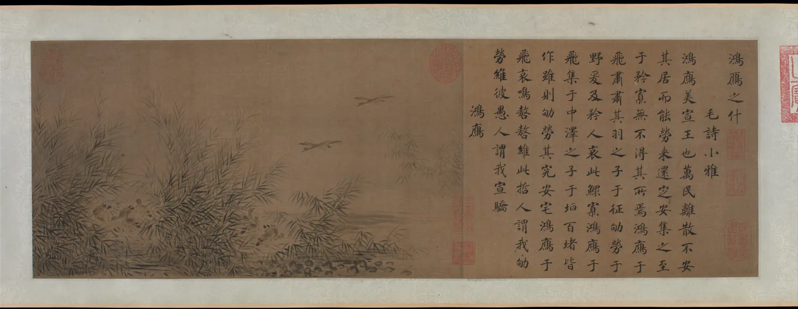
Ma Hezhi, Courtly Odes, Beginning with “Wild Geese” (detail), mid-12th century: a painting beside the words of a song. The Metropolitan Museum of Art (1984.475.1). Public domain (CC0), Wikimedia Commons.
Documents. Royal speeches and reports: Heaven, kingship and the mandate.
Songs. The earliest surviving Chinese poetry.
Many kinds. Temple hymns, praise of rulers, and folk songs.
Two readings. A love complaint could be read as an official’s complaint.
Sources: Ebrey, Ch. 1, pp. 16 and 19.
Q13 story · A society ranked by birth
From King to Shi to Serf, Zhou Society Was Ranked by Birth
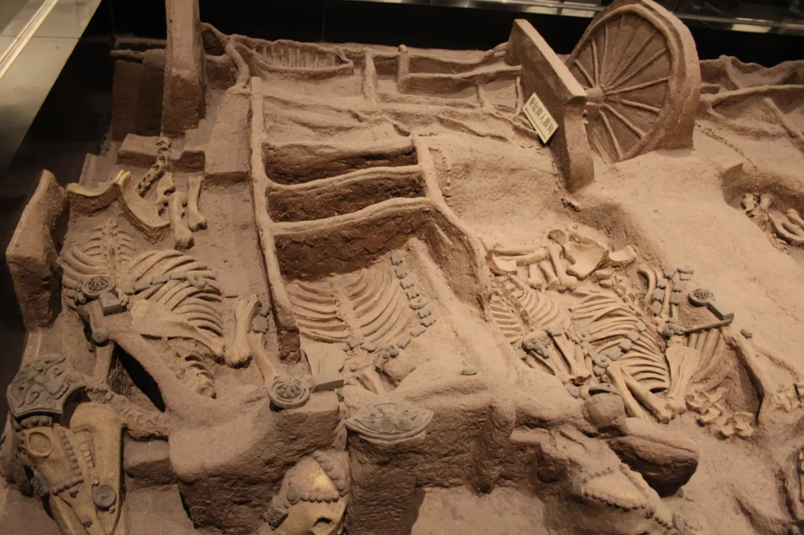
Western Zhou chariot burial from the Zhou capital area near Xi’an (museum replica). Shaanxi History Museum. Photo: Gary Todd, CC0, Wikimedia Commons.
The top. The king, then lords with titles like duke and marquis.
The officers. Hereditary great officials, then the lower nobles called shi.
The bottom. Ordinary subjects; farmers given with the land as serfs.
The bargain. Serfs owed food and labor; lords owed them protection.
The shi were the lowest rank of the Zhou aristocracy: men who could serve as warriors or as officials. In Chapter 2 the word comes to mean educated men who served rulers, the class of Confucius.
Sources: Ebrey, Ch. 1, p. 18.
Q13 story · The farming year · Book of Songs
The Songs Followed Farmers Through Millet, Hemp, Crickets and the Seasons
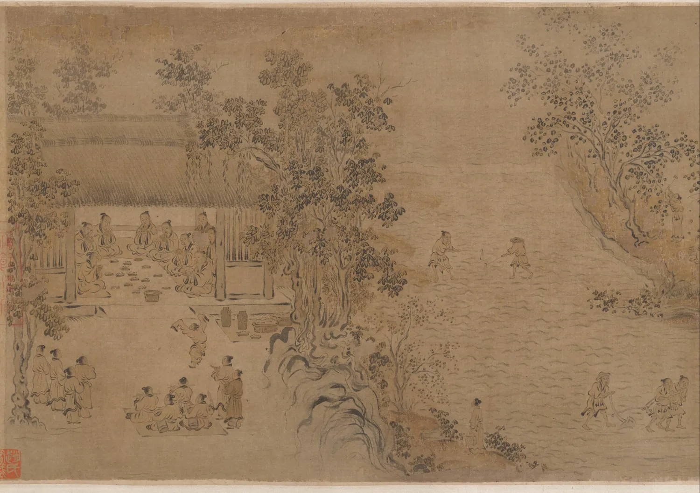
Ma Hezhi, Odes of the State of Bin (detail), mid-12th century: farmers in the fields and a feast in the lord’s hall from “The Seventh Month.” The Metropolitan Museum of Art (1973.121.3). Public domain (CC0), Wikimedia Commons.
Crops. Millet, hemp for cloth, beans and vegetables.
More work. Hunting small animals; gathering grasses and rushes for rope and baskets.
The seasons. Grasshoppers and crickets marked the turning year.
The hall. Farm songs also show villagers serving their lord.
Sources: Ebrey, Ch. 1, pp. 18–19.
Q13 story · Sons and daughters · Book of Songs, Poem 189
One Song Laid Sons on Beds and Daughters on the Floor
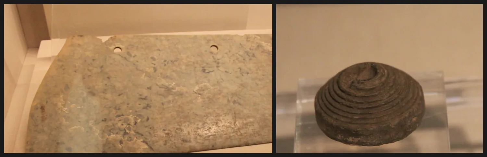
Left: jade zhang scepter, Western Zhou, Shaanxi History Museum. Right: stone spindle whorl for spinning thread, Western Zhou, Xi’an Museum. Photos: Gary Todd, CC0, via Wikimedia Commons.
A son. Sleeps on a bed, wears a skirt, plays with a scepter.
A daughter. Sleeps on the floor, wears a wrap-cloth, plays with pottery.
Futures. He will rule the household; she must not trouble her parents.
Contrast. A Shang royal woman, Lady Hao, once led armies.
In 771 BCE Rong Warriors and Zhou Lords Killed the King, and Families Buried Their Bronzes
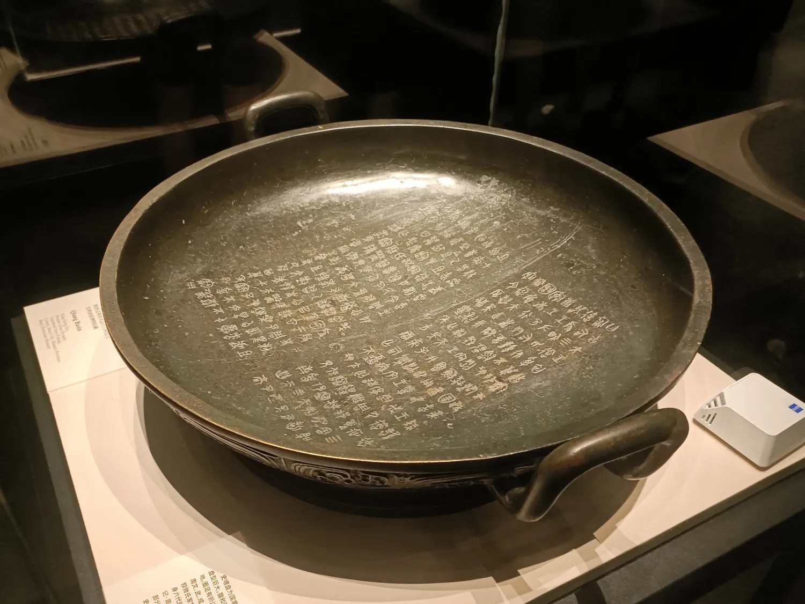
The Shi Qiang pan, one of 103 bronzes buried by the Wei family around 771 BCE and found at Zhuangbai, Fufeng, in 1976. Its 284 characters praise the Zhou kings from King Wen onward. Baoji Zhouyuan Museum. Photo: Kcx36, CC BY-SA 4.0, Wikimedia Commons.
Weakening ties. Over generations, lords’ bonds to the king grew loose.
771 BCE. The king was killed by Rong warriors and Zhou vassals together.
Buried treasure. Fleeing nobles buried their bronzes, planning to return.
1976. Archaeologists found one family’s hoard: 103 vessels.
Sources: Ebrey, Ch. 1, p. 18.
Q12 story · The long result · 1045–771 BCE
By 771 BCE Far More People Could Be Called Chinese Than in Shang Times
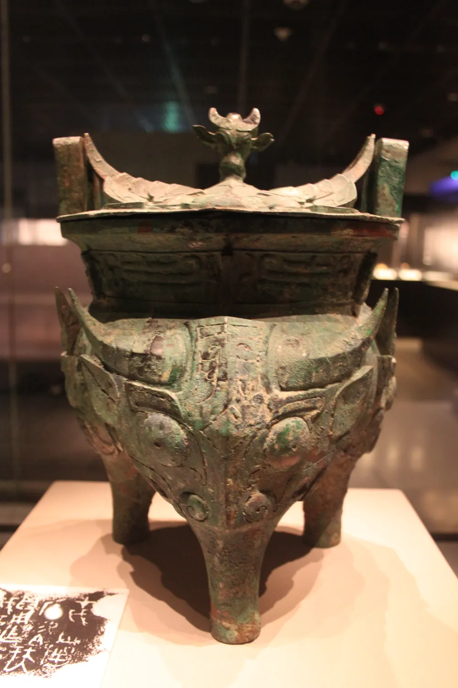
Bronze li with ox heads, early Western Zhou, from the Yan state capital at Liulihe, near modern Beijing. Capital Museum, Beijing. Photo: Gary Todd, CC0, Wikimedia Commons.
Spread. Zhou states reached far beyond the old Shang heartland.
Absorbed. Groups once seen as alien joined the Zhou political order.
Shared ways. Writing, bronze rituals and ancestor worship spread with them.
Result. By 771 BCE many more people can be called Chinese.
Today's lecture ends here. Continue on your own: the stories below finish this chapter's history, and each ends with a review question to answer.
"A little learning is a dang'rous thing; Drink deep, or taste not the Pierian spring."Alexander Pope, An Essay on Criticism, 1711
Independent study · Q10 story · Legend and evidence · 771 BCE
A Famous Legend Blamed a Queen for the Fall; a Buried Text Tells a Different Story
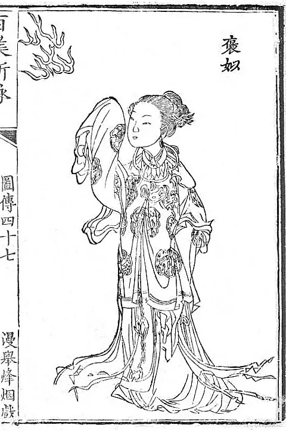
Bao Si, as imagined in an 18th-century Qing album of famous women, Bai mei xin yong, illustrated by Wang Hui. Public domain, Wikimedia Commons.
The legend. King You lit the beacon fires to make his favorite, Bao Si, laugh.
The punchline. When real enemies came, no lord answered the alarm.
The evidence. A bamboo text acquired in 2008 tells of a war the king started.
The pattern. A ruinous queen fits the story of a ruler who lost Heaven’s favor.
Review question to answer · Q10
Explain the concept of the Mandate of Heaven and how the Zhou used it to justify their overthrow of the Shang Dynasty. Add: how might later writers have used the same idea to explain the Zhou’s own fall in 771 BCE?
Sources: Ebrey, Ch. 1, pp. 17–18; Sima Qian, Shiji 4; Tsinghua bamboo slips, Xinian (see the background essay).
Independent study · Q13 story · Reading a song two ways
A Song About a Yellow Bird Could Also Be a Complaint About a Ruler
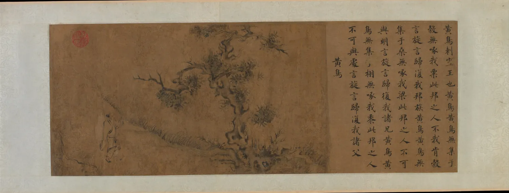
Ma Hezhi, Courtly Odes, Beginning with “Wild Geese” (detail), mid-12th century: the painting and text of “Yellow Bird.” The Metropolitan Museum of Art (1984.475.1). Public domain (CC0), Wikimedia Commons.
Read it plainly. A homesick speaker begs a yellow bird to spare his millet.
Read it as protest. The greedy bird stands for a ruler who takes too much.
Tradition. Old commentaries read many songs as hidden comments on rulers.
Your textbook. A neglected lover could stand for an unappreciated official.
Review question to answer · Q13
What can historians learn about early Zhou political ideas, social hierarchy, and everyday life from the Book of Documents and the Book of Songs? Add: what does allegorical reading add, and what are its risks?
Sources: Ebrey, Ch. 1, p. 16; Book of Songs, Ode 187, “Yellow Bird” (see the background essay).
Independent study · Q11 story · What historians argue
Was Zhou China “Feudal”? Historians Disagree About the Word
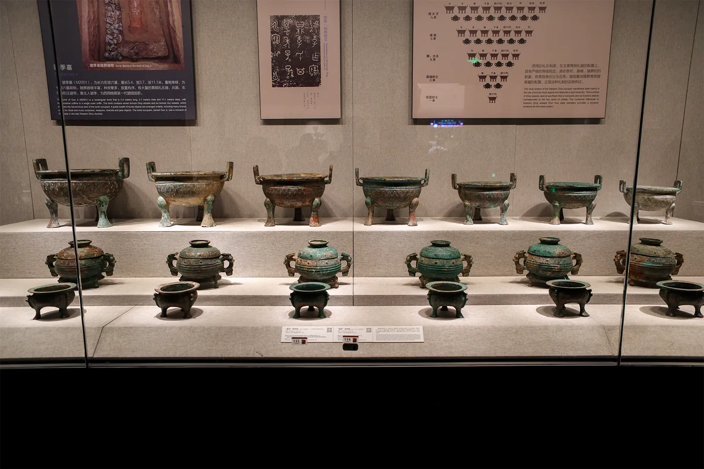
A matched set of bronze ding and gui from the tomb of Guo Ji, a lord of the state of Guo, late Western Zhou. Henan Museum. Photo: Windmemories, CC BY-SA 4.0, Wikimedia Commons.
For “feudal.” Land for loyalty, inherited fiefs, serfs: it looks like medieval Europe.
Against. European feudalism rested on contracts between strangers; Zhou on kinship.
Li Feng’s view. Zhou lords ran “delegated” states under the king’s family rule.
Rank in bronze. Sets of matched vessels showed each lord’s rank.
Review question to answer · Q11
Describe the decentralized, quasi-feudal political structure established by the Western Zhou to govern their territories. Add: is “feudal” the right word for it?
Sources: Ebrey, Ch. 1, pp. 8 and 17–18; Li Feng, Landscape and Power in Early China (2006) (see the background essay).
Sources and image credits
The Stories in This Deck Rest on These Sources
Your textbook
Patricia Buckley Ebrey, A History of China, Chapter 1, “China in the Bronze Age: The Shang and Western Zhou Dynasties (ca. 1500–771 BCE),” pp. 8 and 15–19, including the Book of Songs box (pp. 16–17).
Beyond the textbook
Bronze inscriptions of the Li gui, He zun, Da Yu ding, Song ding and Shi Qiang pan, in Edward L. Shaughnessy, Sources of Western Zhou History (University of California Press, 1991).
Sima Qian, Shiji, chapters 4 and 42, for King You, Bao Si and the founding of Zheng; Tsinghua University bamboo slips, Xinian, for the fall of 771 BCE.
Book of Songs, Ode 187, “Yellow Bird,” with the Mao preface.
Further reading
Li Feng, Landscape and Power in Early China (Cambridge University Press, 2006) and Early China: A Social and Cultural History (2013).
Herrlee G. Creel, The Origins of Statecraft in China (University of Chicago Press, 1970).
Lothar von Falkenhausen, Chinese Society in the Age of Confucius (Cotsen Institute, 2006).
The full scholarly bibliography is in the background essay.
Images
Real images: The Metropolitan Museum of Art (Ma Hezhi handscrolls, CC0); Philadelphia Museum of Art and other public-domain prints, rubbings and maps (Albert Herrmann, 1935); photographs by Gary Lee Todd and 氏子 (CC0), Kcx36, G41rn8, Charlie fong, SY and Windmemories (CC BY-SA 4.0); a course-made map on Uwe Dedering’s base map (CC BY-SA 3.0). Full credits sit in each caption.
Corrections taught beside the textbook: Zheng’s founder was a son of King Li and brother of King Xuan (Shiji 42); Zheng moved east onto drained marshland near the end of the Western Zhou, not at its founding. Details are in the background essay.